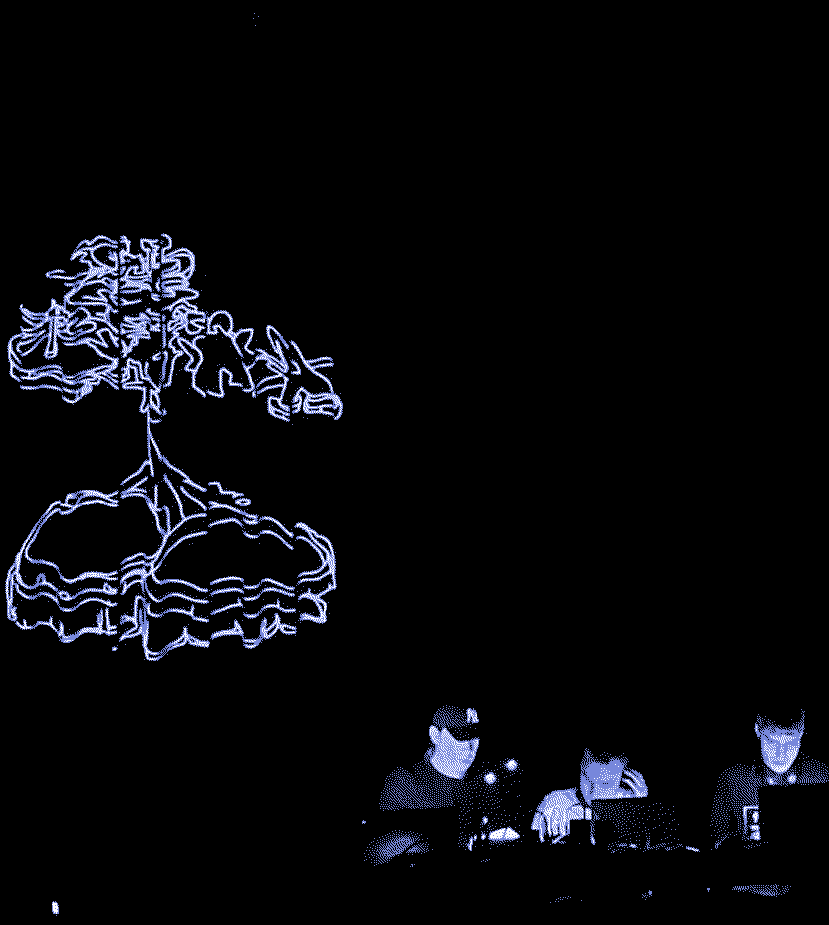
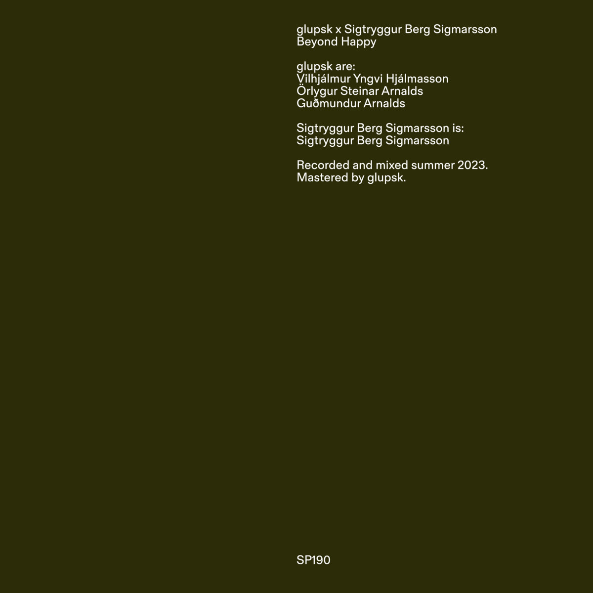

A day of Glupsk
240116

Glupsk @ All Ears Festival, Oslo
Last Friday I had the joy of going to play at All Ears Festival in Oslo with my band Glupsk. As fate would have it this day coincided with our planned release with Sigtryggur Berg, Beyond Happy, on SUPERPANG - a label that we are all huge fans of. We turned the masters for the album in sometime last summer, so having these two events occur on the same day somehow felt monumental as the band has gone through various active phases.

Beyond Happy
Needleless to see I am very proud of both the album and the show in Oslo. Our performance felt like a success, manouvering big Max patches on little to no sleep actually worked out and we managed to realize some concepts of our performances that we had been planning out for a while. The people behind the festival were also extremely nice and helpful. Same can be said about Chris from SUPERPANG who we were in touch with throughout the day of the release. If you are interested in the album it's linked here below but we also plan to record variations of the performance in Oslo for release sometime later this year.